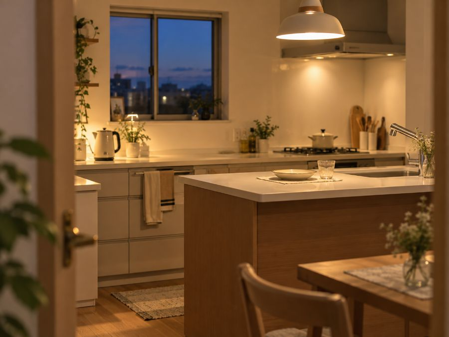

共働きの宅配食
削られるのは、
いつも食事から。共働き家庭が使う冷凍宅配弁当と宅食サービス
帰宅が20時を過ぎる日に、栄養バランスを考えて作るのは無理があります。そこで削られるのが品数で、次に落ちるのが野菜とたんぱく質です。

共働きの宅配食｜結論だけ知りたい方へ
毎日作る前提を捨ててください。週2〜3回を置き換えるだけで、1週間の栄養の合計が変わります。
先に結論です。毎日作る前提を捨ててください。週に2〜3回を外注に置き換えるだけで、1週間の栄養の合計が変わります。全部やめる必要はありません。
惣菜・コンビニと宅配弁当の違い
| 選択肢 | 品数 | 栄養価の管理 | 1食の目安 |
|---|---|---|---|
| スーパーの惣菜 | 足すほど増える | なし | 400〜700円 |
| コンビニ弁当 | 1食で完結 | 表示はある | 500〜700円 |
| 宅配食 | 1食で完結 | 計算されている | 600〜800円 |
| 自炊 | 作った分 | 自分で管理 | 300〜500円 |
価格差は思ったより小さい。差が出るのは「毎回同じ栄養価が確保されるか」です。惣菜は選ぶ人の判断に依存します。
子どもと一緒に食べる場合
大人向けの宅配弁当は味が濃い場合があります。子どもに出すなら、添加物と塩分の両方を見てください。調味料までこだわっているサービスは限られます。
シェフの無添つくりおき
初回26%OFF化学調味料と保存料を使わない手作りの惣菜を週替わりで届けるサービス。食材の82%が国産で、中国産は不使用。専属の管理栄養士が全メニューを設計しています。1回の配送で30〜70品目の食材が入るため、自炊では揃えにくい品数になります。冷蔵なので解凍が不要です。
初回26%OFFの内容を見る ＞食材の産地や添加物の考え方は無添加のページにまとめています。
野菜が足りない場合
忙しい時期に最も落ちるのが野菜です。切る、洗う、炒める。この工程が一番面倒だからです。素材の形が残るタイプなら、食べた感覚も残ります。
GREEN SPOON
レンジ5分野菜がゴロゴロ入ったおかずキットのサブスク。素材の形が残る設計なので、冷凍でも食感が落ちにくい。管理栄養士とレシピを開発しています。ダイエット専用ではなく、極端に低カロリーにしていない点が続けやすさに繋がります。
メニューを見る ＞週に何回置き換えるか
いきなり全部を外注にすると、冷凍庫に入りきらず、飽きます。まず週2回から。特に効くのは、帰宅が最も遅い曜日と、週の後半です。
- 曜日を決める。「余裕がない日に使う」だと結局使いません
- 子どもの分は別に考える。大人と同じ量は食べません
- 汁物だけ作る。宅配食に味噌汁を足すだけで食卓に見えます
子どもの食事を分けて考える
大人向けの宅配弁当は、子どもには味が濃い場合があります。1歳半から6歳向けに設計された幼児食なら、栄養と味付けの両方が年齢に合っています。詳しくは幼児食の宅配にまとめました。
モグモ
初回限定セットあり1歳半から6歳向けの冷凍幼児食。管理栄養士が監修し、幼児期に必要な栄養素をカバーしています。無添加のメニューが9割以上。管理栄養士に無料で相談できるので、月齢に合わせた食事に迷う場合の窓口になります。お届け周期と食数は変更でき、スキップも可能です。
初回限定セットを見る ＞わんまいる 健幸ディナー
5食セット主菜1品と副菜2品が個包装で届く冷凍おかずセット。食材は国産100%で、合成保存料と合成着色料は不使用。5食平均でたんぱく質20g以上、糖質30g以下、塩分3.5g以下、400kcal以下と数値が公開されています。1ヶ月間で同じメニューが出ない構成。湯せんか流水解凍で用意します。
セット内容と価格を見る ＞さらに詳しく